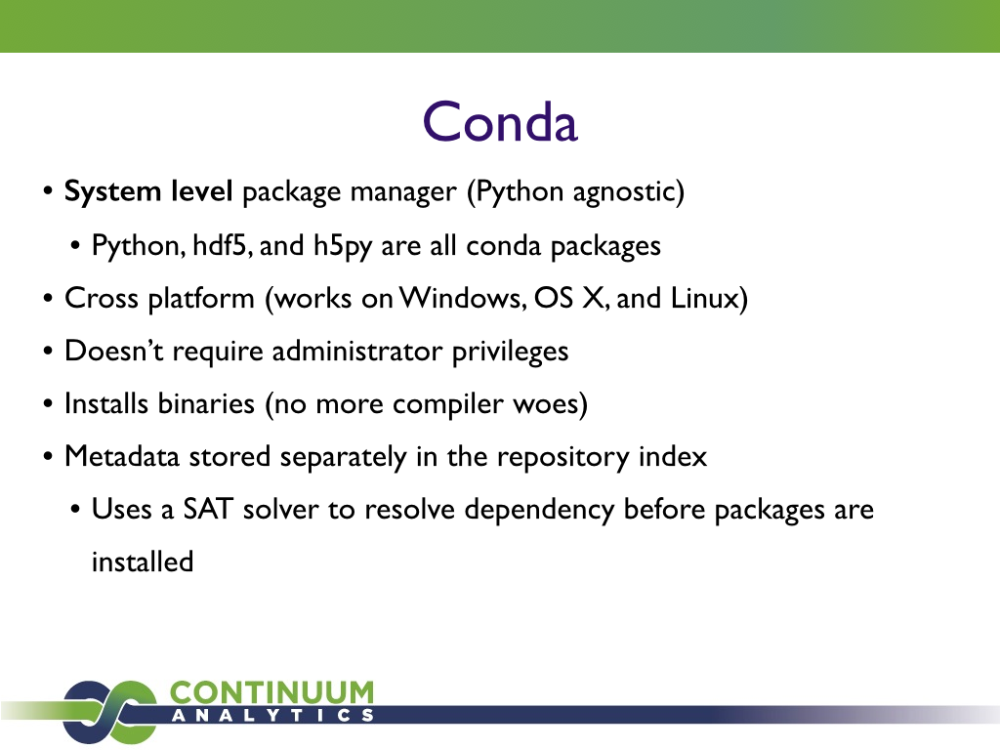

SciPy 2014
I just finished SciPy 2014, a week-long conference in Austin, TX for scientific computing with Python.
This is my third SciPy (I have been to 2011 and 2013). This year, the conference was noticeably larger. Last year there were ~350 people, this year, there were ~450 people. Aside from there being a lot more people, and the main keynotes taking place in a larger room, the most noticeable consequence of this is that there were three days of talks this year, and three concurrent tracks of talks all three days (last year there were two of each). The conference consisted of two days of tutorials, three days of talks, and two days of sprints, running from July 5 to July 12.
Tutorials
The conference started on Sunday with tutorials. I gave a tutorial on SymPy with Matthew Rocklin and Jason Moore. The videos are on YouTube (parts one, two, three, and four). I gave tutorials for SymPy the previous two times I was at SciPy, although with different people (with Mateusz Paprocki in 2011 and Ondřej Čertík in 2013). I really enjoy seeing new people learn about SymPy, and working with Matthew Rocklin, who is a very good speaker and teacher.
I also attended the tutorial on PyDy by Jason Moore, Gilbert Gede, and Obinna Nwanna (parts one and two). This tutorial was also well done, and I highly recommend it if you are interested in Newtonian mechanics.
I unfortunately was unable to attend any of the other tutorials, but I heard good things about them, especially the Julia tutorial.
Talks
From Tuesday to Thursday were talks. The quality of talks this year was very high. The SciPy talks have always been high quality talks, but this year I felt that they were particularly good. I don't think I saw a bad talk.
Thus, I can't really recommend the good talks that I saw without recommending all of them. You should go to YouTube and the SciPy schedule and watch any talk that looks interesting.
I therefore am going to recommend here the very best talks. Two talks in particular stood out to me as the best.
First is Greg Wilson's Thursday keynote, which is among the best talks I've ever seen from any conference.
Greg mentions a lot of ideas, quite a few of which are controversial, which I think always makes for an interesting talk (it also means that I don't agree with everything he said, although I do agree with most of it). Most of the talk is about pedagogy, especially regarding his experiences at Software Carpentry. Some things he posited:
-
There is actually good research about what methods work and don't work in teaching. He referenced this presentation, which lists just about every possible pedagogical method, and the net difference that it has on students, based on over 50,000 studies. For example, individualized instruction has a very small positive effect, whereas teacher feedback has a very large positive effect. Since each takes time and resources, we should focus on those effects that have the highest impact. Greg pointed out that web-based learning has very little positive effect, and hence is a waste of time and money. The most effective change is removing disruptive students.
In particular, I liked the quote, "if you want more computing in high school, you have to tell me what to take out." People like to go on that schools need to teach more of this or more of that, and computing and programming tends to be high on that list these days, but anyone who does not discuss what things should be removed from the curriculum, which is already quite full, is not being honest about the discussion.
-
The other big point Greg made is that we need more incremental massive collaboration in teaching. This is the same model that has built open source and Wikipedia, but is mostly absent from teaching. Incremental change is important here, as well. It is more useful for someone to contribute fixes to existing lesson plans, so that they become better for the students, but in his experience, people are much more willing to add new lessons. Greg calls for a "culture of patching". If incremental change could be adopted in teaching, teachers could aggregate methods and lesson plans, removing the massive duplication, and most importantly, making teaching materials that actually work for students to learn. Greg Wilson asks why open source and Wikipedia are able to thrive on massive incremental change, but teaching is not, a question he hasn't found the answer to.
My thought on the matter is that unlike writing software or collecting and presenting facts, pedagogy is very difficult. If I contribute a patch to an open source project that fixes a bug, I can run the tests to see if my fix is "correct". If I fix an incorrect fact on Wikipedia, it is less easy, but I can still cite and check references to make sure it is correct. But for teaching, it is very difficult to know what methods work and what don't, and as Greg pointed out at the beginning of his talk, the effects of different methods can be very counterintuitive.
The second talk that I recommend is Jake VanderPlas's talk about Frequentism and Bayesianism.
I won't summarize this talk, as Jake has done a much better job in his blog (parts one, two, three, and four). The best thing is to just watch the talk. I will just point out that before the talk, I did not really understand the difference, not being a statistician or someone who works with statistics regularly, and having seen the talk, I now feel that I do. It's a controversial topic, and if you care about the matter, you should know that Jake is a strong Bayesian, although I felt that he gave both sides a fair exposition.
Again, all talks I saw at the conference were good. But those two I felt were the best. I should also mention here that I myself gave a talk on Conda (more on that later).
The Conference
Of course, the talks are only a part of any conference. The best part of SciPy is the gathering of the community. Each year I meet more new people, as well as talk with people I already know, but don't get to see outside of SciPy.
For me, the biggest part of the interactions this year were on Conda and packaging. The background is that I have been working full time for Continuum since January, and I had interned last summer, working primarily on the Conda package manager and Anaconda, the Python distribution. This year, some of the biggest buzz at the conference was about Conda. I'm obviously selection biased, because people came to me specifically to talk about Conda, but I also overheard it in other people's conversations, in several of the presentations, and frankly, the people who did talk to me about Conda were very excited about it. Just like everyone was talking about the IPython Notebook last year and how it has solved the fundamental problems of sharing and presenting data analysis, this year, everyone thanked me for my work on Conda and how it has basically solved the packaging problem, the ubiquitous problem in Python since people started using it.
Conda: The Packaging Problem Solved
Here is the talk I gave on Conda:
I made the claim in my talk that Conda has solved the packaging problem, and the general feel from people I talked to who are using Conda is that it has.
I think this slide from my presentation summarizes why Conda solves the packaging problem.

One of the most amazing things about the scientific Python community, and one of the things that I think really sets it apart from other Python communities, is the use of Python alongside other languages, such as C, C++, Fortran, R, or Julia. No one language is enough to get the job done for serious scientific work. The fundamental brokenness of Python packaging has been that it has focused too much on Python specific tools and processes. The distutils/setuptools/pip/virtualenv stack works great if your code begins and ends with Python. Where it falls over is when you want to link against a C library, compile some Fortran or Cython code, and communicate with other languages like R and Julia. By being a system level package manager, which is fundamentally Python agnostic, Conda is able to deal with all packages equally, whether that package be a Python package, a C extension which other packages link against, or Python itself.
By being truly cross-platform and user installable, Conda is able to reach the maximal number of users, especially those who have historically been hit by the packaging problem the hardest: those who are on Windows or those who do not have admin rights to install necessary tools to install the packages they need.
Finally, Conda installs binaries, not source packages, and its metadata is
entirely static (you do not need to execute arbitrary Python code to capture
the metadata of a package). These two things remove two of the largest
sources of issues with the existing Python packaging tools, such as compiler
errors, and nonuniformity in metadata standards (there seem to be as many
different ways of writing setup.py as there are packages on PyPI), by
removing arbitrary code execution from package installation.
Conda opens up its ecosystem to anybody by making it easy for people to build their own Conda packages using reproducible Conda recipes. And Binstar makes it easy to share those packages. I'm very excited about Binstar, as I think it does for packaging what GitHub has done for open source, i.e., distributes and democratizes it. There are challenges on how to deal with this, of course. As with any distributed democratized system, Binstar can be a wild west of packages. Continuum is thinking about ways to manage this complexity, while still reaping the benefits it provides. If you have any thoughts on things that can be done, let me know in the comments section below.
Of course, solving the packaging problem and removing it are different things. Conda does not make it easier to compile difficult packages. It only makes it so that fewer people have to do it. And there is still work to be done before Conda really takes over the world.
Sprints
The conference ended with two days of sprints. I mainly helped people with Conda packaging. One key thing that happened is that I worked with Aron Ahmadia so that HashDist can generate Conda packages. HashDist is a package compiling framework that makes it easy to have completely reproducible builds by hashing all the information that was used to compile a package, and recompiling when any of that information changes. You can learn more about HashDist by watching Aron's talk from the conference:
I am now convinced that HashDist is a good solution for people who still want the control of compiling their own packages. Once HashDist is able to produce Conda packages, then you can gain the benefits of both worlds: Conda's powerful package management and environment notion, with HashDist's modular and reproducible package building framework.
Other thoughts
The organizers of SciPy did an excellent job this year. The video crew did something which I have not seen before, which is that they uploaded the videos of the talks on the same day that the talks were held. My talk, which was held right before lunch, was uploaded before the last talk of the day. Something that I saw come out of this is that people not attending the conference were able to watch the talks and take part of the conversation with the conference attendees, via Twitter and other social media, or by joining the sprints after the conference.
The extended three days of talks really took their toll on me. The conference starts early enough in the morning and the social events after go so late in the evening that each day of the conference I become a little more sleep deprived. Usually by two days of tutorials and two days of talks I have hit my limit, and this year, I really had a hard time making it through that fifth day. Fortunately for the sprints I was able sleep in a little bit, as it's not a big deal if you miss the beginning.
This year the conference organizers made a push for diversity, and it shows. There were noticeably more women at the conference this year, and not just insomuch as there were more people at all.
Finally, I leave you with the greatest lightening talk. Ever.
Comments
Comments powered by Disqus